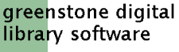

Welcome to your Greenstone3 installation
Run the test servlet.
Run the default library servlet.
View the demo collections that come with Greenstone, using the Greenstone 2 look and feel.
Run the 'standard' servlet.
View the same collections using the standard Greenstone 3 look and feel
Run the development servlet.
Try out the new skin system currently in development
Run the gateway servlet.
This uses the standard Greenstone 3 look and feel, and talks via SOAP to the site with the demo collections (localsite).
Note that SOAP needs to be installed, and a SOAP server needs to be running for localsite.
powered by
greenstone3